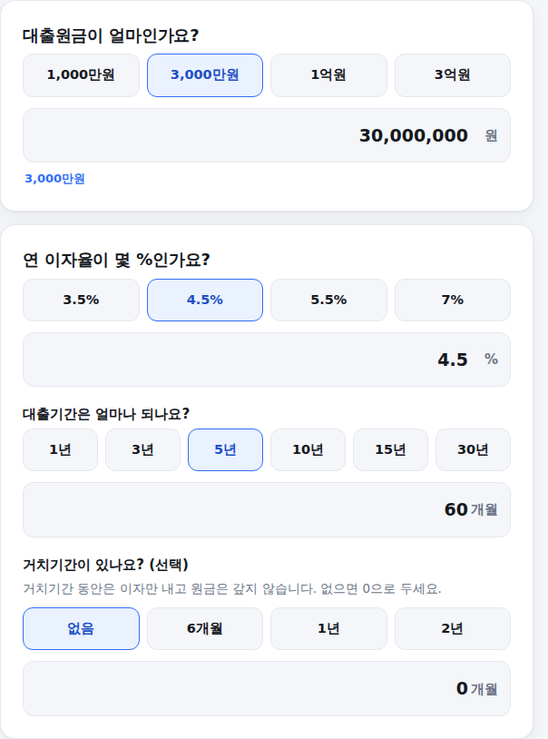
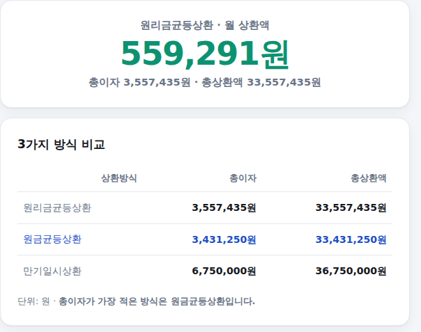
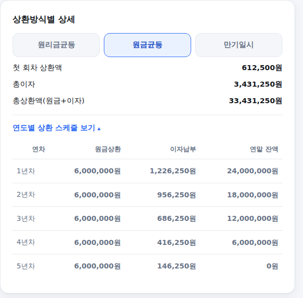

은행에서 대출을 받을 때 "원리금균등이요, 원금균등이요?" 물어보면 대부분 뭐가 다른지 잘 모른 채로 대충 고르게 됩니다. 대출원금·이자율·기간만 넣으면 세 가지 상환방식의 월 상환액과 총이자를 한 번에 비교해주는 계산기를 만들었습니다. 쓰는 법은 아래와 같습니다.
-
대출원금, 이자율, 기간, 거치기간 입력
대출받을(또는 받은) 원금과 연 이자율을 넣습니다. 아래에서 대출기간을 개월 수로 넣고, 초반에 이자만 내는 거치기간이 있다면 함께 넣어보세요. 거치기간이 없으면 0으로 두면 됩니다.

대출 조건 입력 화면
-
결과 확인 — 3가지 방식 비교
맨 위에는 가장 널리 쓰이는 원리금균등상환 기준 월 상환액이 크게 나오고, 바로 아래 표에서 원리금균등·원금균등·만기일시 세 가지 방식의 총이자와 총상환액을 한눈에 비교할 수 있습니다. 총이자가 가장 적은 방식이 어디인지도 바로 표시됩니다.

3가지 방식 비교 화면
-
방식별 상세 · 연도별 상환 스케줄 확인
궁금한 상환방식을 눌러보면 그 방식의 상환액·총이자·총상환액이 자세히 나옵니다. 연도별 상환 스케줄 보기를 펼치면 매년 원금을 얼마나 갚고 이자를 얼마나 내는지, 연말 잔액이 어떻게 줄어드는지까지 확인할 수 있습니다.

방식별 상세·연도별 스케줄 화면
세 가지 방식, 무엇이 다른가요
원리금균등상환은 매달 갚는 금액(원금+이자)이 항상 똑같습니다. 매달 얼마 나갈지 예측하기 편해서 가장 많이 쓰입니다. 원금균등상환은 매달 갚는 원금이 고정되고, 이자는 남은 잔액에 붙기 때문에 초반엔 부담이 크지만 갈수록 상환액이 줄어들고 총이자는 세 방식 중 가장 적습니다. 만기일시상환은 만기 전까지 이자만 내다가 마지막에 원금을 한 번에 갚는 방식이라 매달 부담은 가장 적지만, 원금이 끝까지 줄지 않아 총이자는 세 방식 중 가장 많습니다.
거치기간은 왜 있나요
거치기간은 대출 초반 일정 기간 동안 원금은 갚지 않고 이자만 내는 기간입니다. 사업 초기 자금 여유가 없을 때나 중도금 대출처럼 초반 상환 부담을 줄이고 싶을 때 활용됩니다. 다만 거치기간이 길수록 원금을 갚는 실제 기간이 짧아져서, 거치기간 이후의 월 상환액은 더 커진다는 점을 함께 확인해보세요.
계산은 참고용이며 금융 조언이 아닙니다. 중도상환수수료·변동금리·인지세 등 실제 대출 조건에 따라 차이가 날 수 있습니다. 기준: 원리금균등상환·원금균등상환·만기일시상환 표준 상환 공식, 2026년 기준 정리.